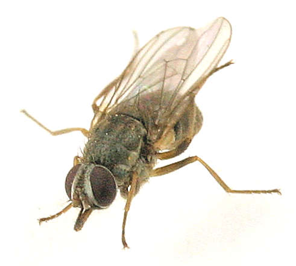

La mosca de los cuernos es un insecto pequeño, de aproximadamente 3,5 a 5 mm, con cuerpo de color gris oscuro o negro brillante. Posee un aparato bucal picador-chupador y se alimenta de sangre, principalmente del ganado bovino. Los adultos permanecen gran parte del tiempo sobre el animal, especialmente en el lomo, los hombros y alrededor de los cuernos. Las hembras depositan sus huevos en el estiércol bovino fresco, donde se desarrollan las larvas.